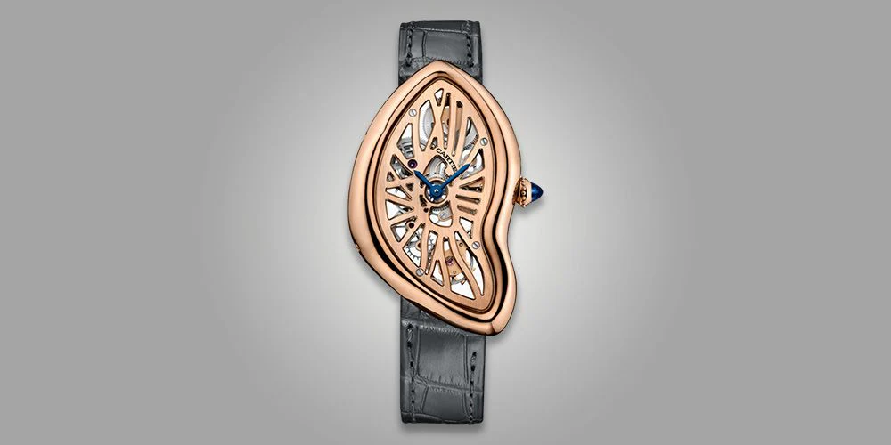
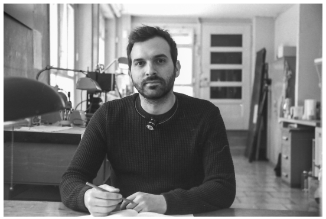

Exploring the Intersection of Precision, Craftsmanship, and Technological Innovation
Welcome to Time Refined, a dynamic platform dedicated to celebrating and exploring the limitless potential of horological innovation. We are a community of watchmakers, designers, engineers, and enthusiasts who believe that the art of timekeeping transcends mere functionality.
Our mission is to showcase groundbreaking timepieces, provide insightful reviews, and create a collaborative space where watchmaking expertise can flourish across design, technology, and craftsmanship.
This Month's Highlights
Most Innovative Watch Design
Explore a revolutionary timepiece that challenges traditional watchmaking, blending cutting-edge materials with unprecedented mechanical precision.
Vintage Restoration Masterpiece
Witness the art of horological restoration, where timeless craftsmanship meets modern preservation techniques to breathe new life into historic timepieces.
Emerging Watchmaker Spotlight
Discover an extraordinary timepiece from an emerging watchmaker who is redefining the boundaries of mechanical watch design and innovation.